Part I: Introduction to Robotic Systems
What Is a Robot?
A robot is a programmable physical system that senses its environment, makes decisions, and acts on the world to accomplish a task. At its core, every robot repeats the same loop:
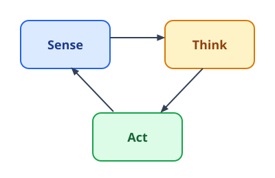
Sensors and Actuators
- Sensors (cameras, LiDAR, wheel encoders, IMUs, force/touch sensors) perceive the environment and the robot's own state.
- Actuators (motors, servos, hydraulic and pneumatic drives) act on the world, turning commands into motion.
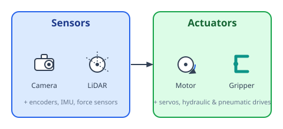
The chapters ahead are about closing the loop between the two: turning sensor measurements into the right actuator commands.
Open-Loop vs. Closed-Loop Control
- Open-loop control sends commands to the actuators without checking the result — like a washing machine running on a fixed timer. It's simple, but any disturbance or model error goes uncorrected.
- Closed-loop control uses sensor feedback to compare the actual state against the goal and continuously corrects the error. This is how most real-world robots operate.
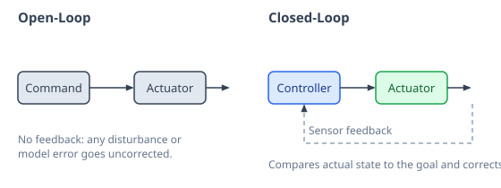
Chapter 3 builds on this idea directly: its controllers compute exactly how much correction to apply at each step, based on the error between the current and goal pose.
Model-Based vs. Model-Free Control
- Model-based control uses an explicit mathematical model of the robot — its frames, transforms, and Jacobians — to compute the correction needed at each step. This is the approach this book builds, step by step.
- Model-free control skips the explicit model and learns a control policy directly from data and experience, at the cost of needing far more of it.
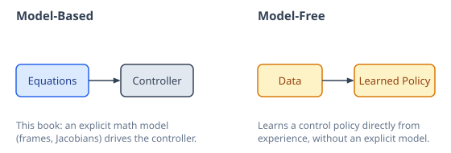
Kinematics vs. Dynamics
- Kinematics describes motion in terms of positions, velocities, and accelerations, without asking what caused it. This is pure geometry, and it's the focus of this book.
- Dynamics goes further, relating motion to the forces and torques that produce it, along with mass and inertia.
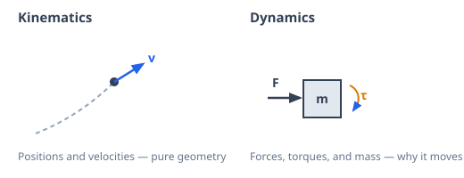
Mobile Robots vs. Manipulators
- Mobile robots (wheeled, legged, aerial) move their entire body through the environment. Their kinematics describes how wheel or leg motion translates into changes in position and heading.
- Manipulators (robot arms) stay fixed at their base and move an end-effector through a chain of joints. Their kinematics describes how joint angles translate into the position and orientation of that end-effector.
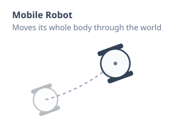
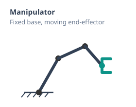
Both are described with the same underlying math — frames, rotations, and transformations.
Revolute vs. Prismatic Joints
- Revolute joints rotate about a fixed point, like an elbow or a door hinge. Their variable is an angle, \(\theta\) or \(q\).
- Prismatic joints slide along a fixed axis, like a piston or a linear rail. Their variable is a distance, \(d\) or \(q\).
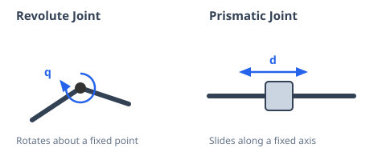
Every manipulator is a chain of these two joint types — most are built entirely from revolute joints, since they're cheaper and more common in practice.
Degrees of Freedom (DOF)
A robot's degrees of freedom are the independent ways it can move. DOF is counted in two different spaces:
- Actuator-space DOF — the number of independently driven joints or motors.
- Cartesian-space DOF — the number of independent directions the end-effector (or body) can move in the world: up to 3 in 2D (position and heading), or up to 6 in 3D (three for position, three for orientation).
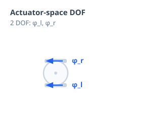
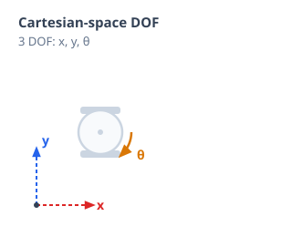
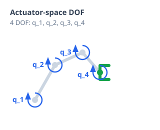
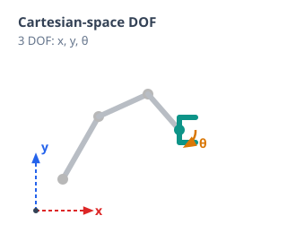
These two counts don't have to match. A robot is redundant when it has more actuator-space DOF than Cartesian-space DOF, and underactuated when it has fewer.
Open-Chain vs. Closed-Chain Mechanisms
- Open-chain (serial) mechanisms connect their links in a single unbranched sequence, from the base to the end-effector, with no loops.
- Closed-chain (parallel) mechanisms connect their links into one or more closed loops, like a four-bar linkage or a Stewart platform.
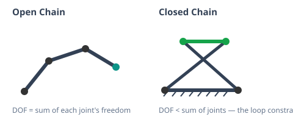
In an open chain, DOF is simply the sum of each joint's freedom. In a closed chain, the loop constrains the joints, so DOF ends up lower than the raw joint count — how the joints are connected can give or take away freedom, not just how many motors drive them.
Holonomic vs. Non-Holonomic Constraints
- Holonomic robots can move directly in any direction their DOF allow — turning and sliding sideways at the same time, like an omnidirectional robot.
- Non-holonomic robots can't do that — a car or a differential-drive robot has to turn before it can move sideways, even though it can still reach any position eventually (think parallel parking).
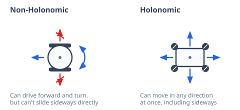
Whether a mobile robot is holonomic or not comes down to its wheels. Differential-drive and car-like robots are non-holonomic; omnidirectional wheels remove that restriction entirely. Depending on where and how a wheel is mounted, it can add a DOF, remove one, or have no effect at all. Chapter 3 revisits this idea more precisely, in terms of what a robot's motion actually depends on.
Compliance vs. Rigidity
- Rigid robots resist external forces and hold their commanded position as precisely as their actuators allow. Most industrial arms are built this way.
- Compliant robots yield to external forces instead of fighting them, either through soft, springy hardware or through control software that makes a rigid robot behave that way.
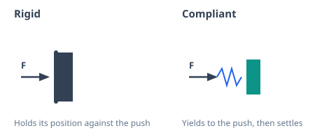
Compliance doesn't always require special hardware — a common technique called impedance control lets an otherwise rigid robot behave like a spring, purely in software. This trade-off matters most where robots interact with people or uncertain environments, like collaborative robots (cobots).